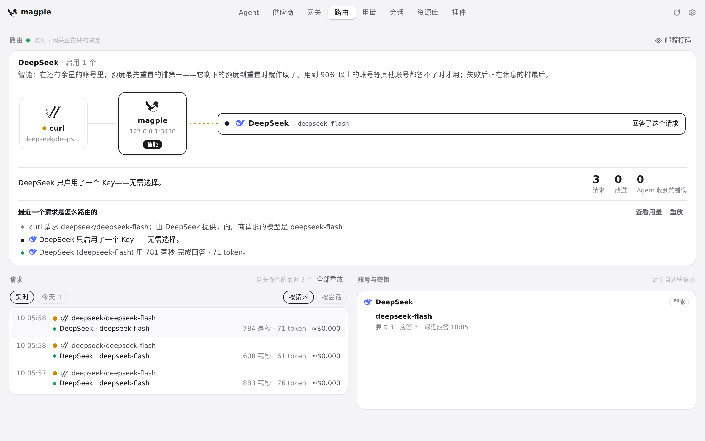
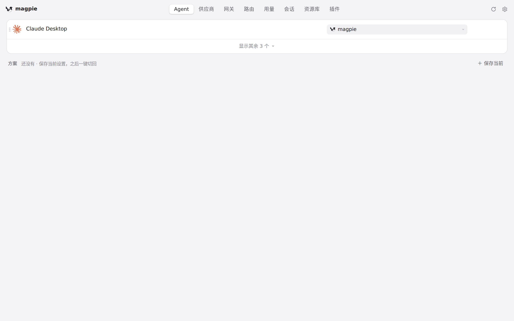
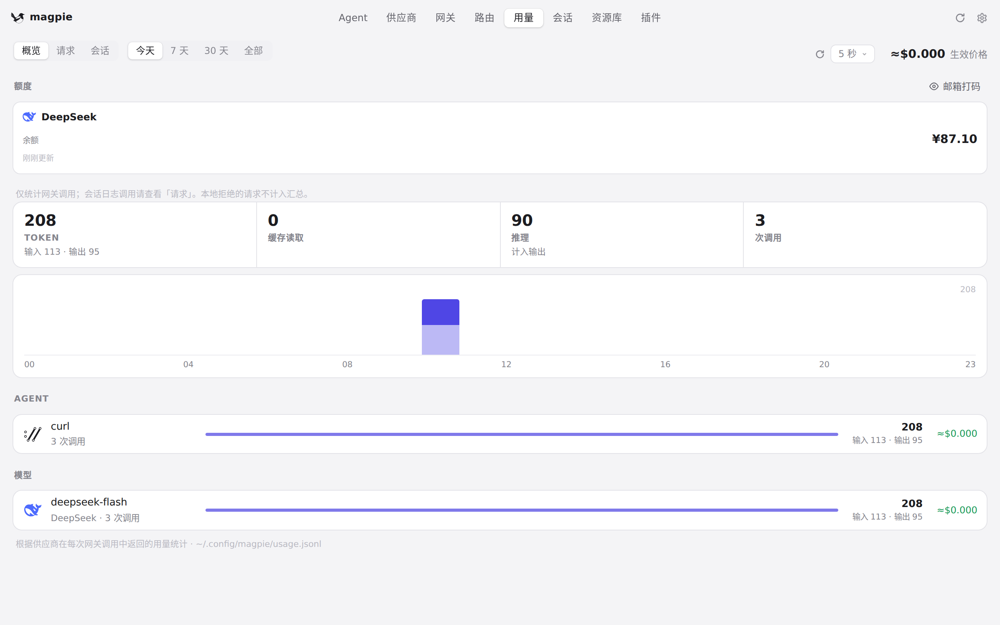
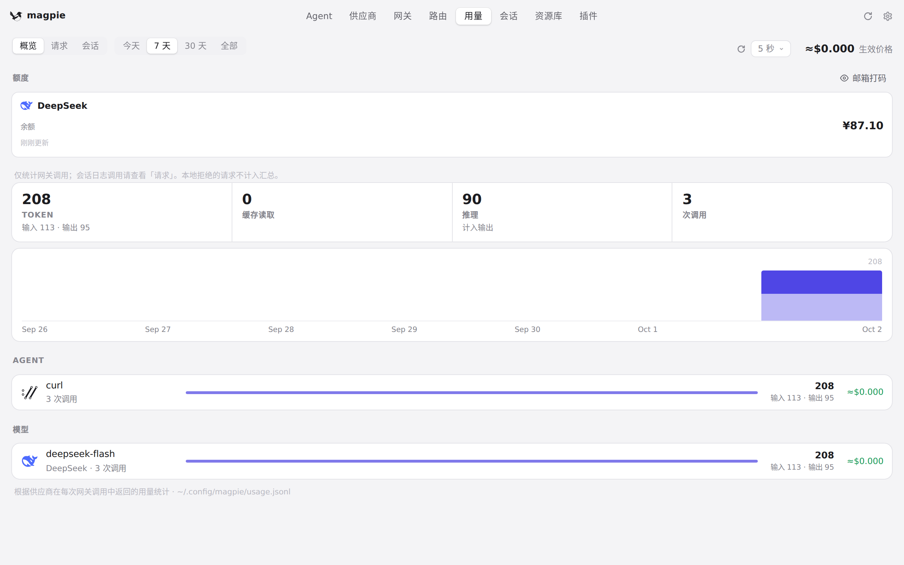
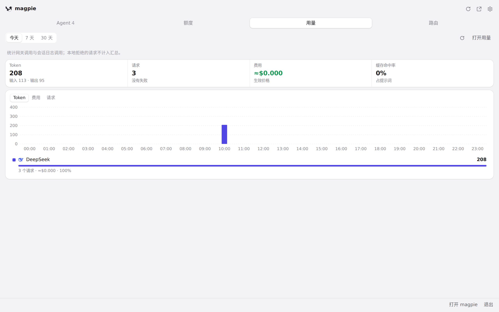
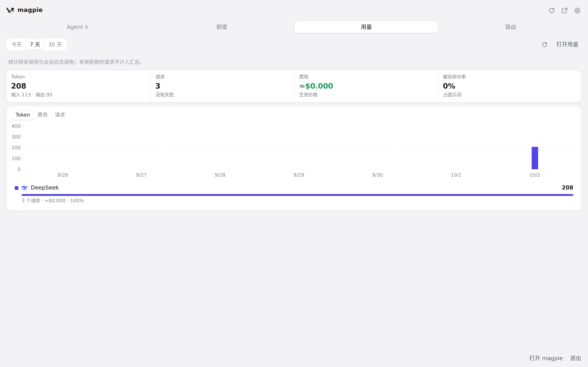

#547 界面预览
commit ee37975 · 回到 PR · 这次 diff 里只有两处真正落到界面上：路由页的帧循环不再在页面隐藏时继续调度（切到别的标签、窗口被盖住时停下，重新显示/聚焦时恢复），以及「用量」页与面板「用量」标签的刷新被串行化——同一时刻只有一个请求，期间的周期切换、供应方选择和「立即刷新」会被排队并在这次读完后补上。其余改动（网关请求体积与队列上限、用量索引与摘要缓存、插件刷新超时重试）都在后端，界面本身没有新增元素。
红线是鼠标走过的轨迹，红色圆环是一次点击；底部文字是这一步在做什么。空格暂停，← → 逐段查看。

路由页隐藏与恢复 · 路由页打开着：实时路由与最近请求

路由页隐藏与恢复 · 选中「Agent」时的页面
路由页隐藏与恢复 · 切回「路由」后的页面

用量页的刷新 · 用量 · 概览，今天的数据
用量页的刷新 · 点下「立即刷新」之后的用量页

用量页的刷新 · 选「7 天」后的用量页

面板里的用量标签 · 面板「用量」标签读到的数据

面板里的用量标签 · 面板改选「7 天」之后